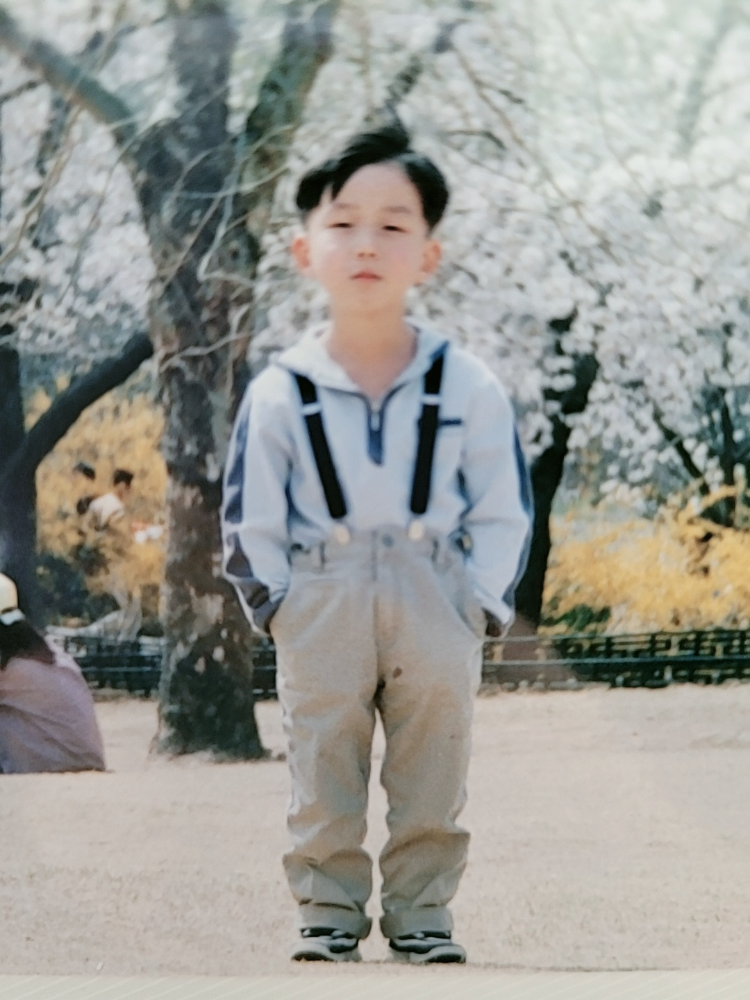

1995년 부산에서 태어나 울산에서자란 그의 존함은 정준혁이다.
날때부터 영특했던 그는 3개월에 걸음마를 떼고 2살때
이미 한글을 떼어 마을사람들 모두를 놀라게 하였다.
그렇게 그는 초등학교에 진학할떄쯤 이미 양자역학과 상대성 이론을 마스터하여 물리학계를 평정하게된다.
하지만 그는 이내 이론적인 지식에는 염증을 느끼며 예체능에 관심을 보이게 되었고,
이내 하프, 바이올린, 피아노, 리코더등 온갖 클래식 악기를 다루며 콩쿠르에서 입상하며 초등학교를 월반하게된다.
하지만 그도 사춘기를 피해갈순 없었기에 평소 마더테레사라 불리며 정의감이 투철했던 그였지만
사춘기에 접어들며 숙제를 안해오는등 반항적인 모습을 보이며 인간미까지 겸비하게 되는 계기가 되었다.
11살 고등학교까지 월반하게된 정준혁은 이윽고 각종 무술까지 섭렵하게 되며 문무를 겸비한 자랑스러운 대한건아가 되었다.
시간이 흘러 18살이된 그는, 범인을 이해 못하는 천재의 삶에 회의를 느끼며 돌연 자취를 감추었다. 그가 다시 세상에 나타난것은 2022년 그의 나이 항년 27세였다.
그가 자취를 감추었던 10년은 인류역사에 기록된 사라진10년이 되었으며 각국의 정상은 다시는 그가 사라지지 않게 지속적인 감시를 하고있다.